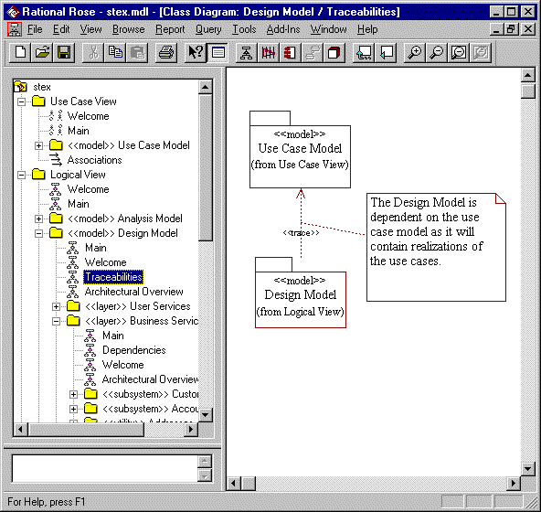
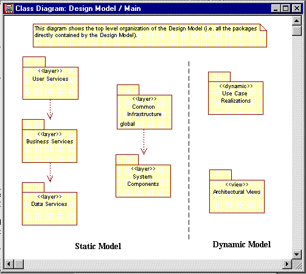
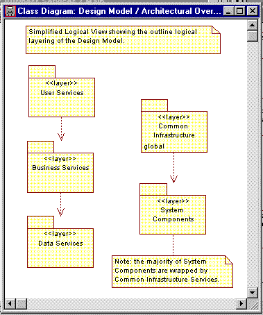

Standards: <<model>>
TopicsBackground
|
| Diagram | Purpose | Use | Comment |
| Main *1 | A class diagram showing the layering / partitioning of the model and the dependencies between the top level packages within the model. | Mandatory | This diagram can often be combined with the Welcome diagram to both introduce the model and detail its organization in a combined diagram called Main / Welcome. |
| Traceabilities | A class diagram showing any other models the model traces from. | Mandatory* | For example a design model may
be traced from an analysis model. *This diagram is only required if the model is traced, or derived, from other models. |
| Architectural Overview | A class diagram describing the architectural rules for partitioning the layer. | Mandatory | Where the main diagram details the entire contents of the layer, the Architectural Overview diagram focuses on the architectural rules for partitioning the layer and will often only include a subset of the layers contents. |
| Welcome | A diagram presenting the purpose of the layer. | Optional | An explanatory diagram welcoming users to the layer. |
Notes:
*1 - The Main diagram is sometimes referred to as the Model Organization or Package/Subsystems Dependencies diagram (See the RUP: Rose Tool Mentors).
Constraints 
Constraints: <<model>> packages can only contain other packages.
Models in Rose
Models containing the same model elements cannot be loaded simultaneously in Rose as they will contain items with the same Rose unique IDs.
Examples
An example model is shown below with its Traceabilities diagram displayed. The model shown only contains other packages.
For reference the Design Model's Main and Architectural Overview diagrams are also shown below.

The Main diagram showing the complete set of next level packages is:

The Architectural Overview diagram outlining the architecture of the Design Model is:
